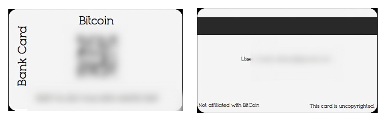

23 Apr 2013 | Listening to the sounds of turkey bacon cooking. Walking down to the flood, only about six blocks from my house.
22 Apr 2013 | Watching the river flood reports. Getting closer to town every day. + Happy Earth Day. ^_^
21 Apr | Lost in Egyptology research. ...
20 Apr | Went to the St.Louis Art Museum, trekked across Forest Park, photographed the seals at the St.Louis Zoo, and had a picnic. Full day.
19 Apr | Watching the clouds float by. ...
18 Apr | Practicing jQuery.
17 Apr | Downloading free javascript, jQuery and node.js books.
16 Apr | Spending the day drinking tea and going to meetings.
15 Apr | Listening to the thunder, drinking tea. Reading about advanced Git tricks.
Meaningful Conversations
12 Apr 2013 |
When was the last time you had a conversation that left you energized? Most of the time i'm left feeling drained and tired after a conversation. Not for lack of trying to communicate. But for a lack of dialogue between me and the person I am talking to. It seems the art of conversation has died.
I read an interesting quote today that said,
"Conversation is the laboratory and workshop of the student." by Ralph Waldo Emerson.
Without dialog, without conversation, we aren't truely sharing and learning with other people. We are monologing. ... Stifling innovation and creativity. Creating "mindsmog". It's beyond time that we take back the art of conversing with one another...
Notes
Everything on this site poofs into glittery fairy dust. Check back often, you never know when things might just disappear. ...Current Project
As you know, I've been interested in Bitcoin for a while now. Before I got rid of G**gle I heard that there was a Bitcoin debit card. I thought. That's cool, where can I get them? Turns out, they aren't for sale anymore. So, I sat down yesterday with Lightroom, Artboard, and some css tinkering and made my own; complete with fake magnetic strip.
These cards actually work for sending and receiving, when linked to a Bitcoin address. If anyone has Artboard installed on their computer and would like a copy of this template for their own use. Just shoot me an e-mail. The template costs the small amount of 0.01 Bitcoins. Which you can send through a small donation on this web site. For 0.2 Bitcoins I'll custom make the cards for you and email you the finished images. Just make sure to send me your QR code, and send and receive numbers.
Here's a preivew:
